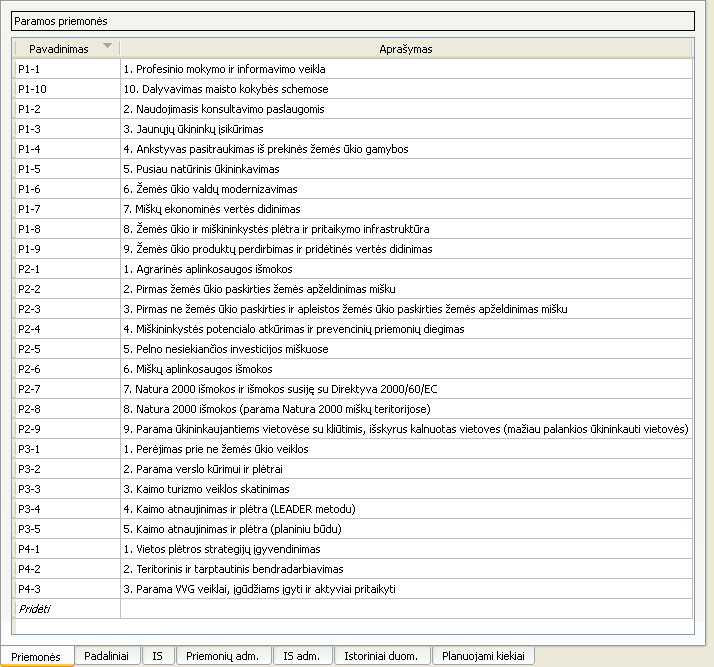

Paramos priemonių sąsaja

Naudojantis šia sąsaja galima:
- Pridėti naują paramos priemonę paspaudus apatinę lentelės eilutę „Pridėti“ bei suvedus reikiamus duomenis
- Ištrinti vieną ar kelias paramos priemones jas pažymėjus, atidarius kontekstinį meniu ir paspaudus mygtuką „Pašalinti“
- Ištrinti vieną ar kelias paramos priemones jas pažymėjus ir paspaudus Ctrl+-
- Pakeisti paramos priemonės informaciją, du kart spragtelėjus ant lauko, kurį norima pakeisti